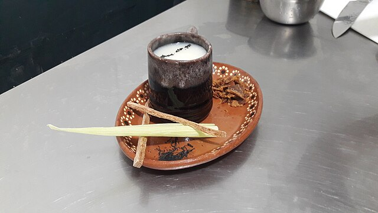

> Home
Plagiarized Atole Recipe

Atole is a popular Mexican hot beverage made with milk or water, thickened with masa harina, and flavored with cinnamon and brown sugar. Try this soothing beverage for breakfast, in the afternoon with some cookies, or after dinner! Plagiarized from Lizzie on allrecipes.com!!!
Ingredients
- ½ cup masa harina
- 5 cups water or milk
- 1 tablespoon ground cinnamon
- 5 tablespoons piloncillo, brown sugar cones
- 1 tablespoon vanilla extract
Steps
- Place the masa, water or milk, cinnamon, and piloncillo in a blender. Blend until smooth, about 3 minutes.
- Pour the contents of the blender into a sauce pan and bring the mixture to boil over medium heat, stirring constantly. When the mixture reaches a boil, turn the heat to low and continue to whisk for 5 minutes.
- Remove the pan from the heat and stir in the vanilla. Pour into mugs and serve hot.